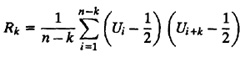
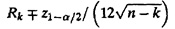
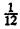

)
FIGURE 27.2 Plot of confidence intervals of the first 10 autocovariance.
| Previous | Table of Contents | Next |
It is interesting to compare the K-S test with the chi-square test. The K-S test is specifically designed for small samples and continuous distributions. This is opposite of the chi-square test, which is designed for large samples and discrete distributions. The K-S test is based on the differences between observed and expected cumulative probabilities (CDFs) while the chi-square test is based on the differences between observed and hypothesized probabilities (pdf’s or pmf’s). The K-S test uses each observation in the sample without any grouping, while the chi-square test requires that the observations be grouped into a small number of cells. In this sense, a K-S test makes better use of the data. One of the problems in using the chi-square test is proper selection of the cell boundaries. The cell sizes affect the conclusion, but there are no firm guidelines for choosing the appropriate sizes. With the K-S test no such guidelines are required. A chi-square test is always approximate, while the K-S test is exact provided all parameters of the expected distributions are known.
One direct method to test dependence of two random variables is to see if their covariance is nonzero. If the covariance is nonzero, the variables are dependent. The inverse is not true, however. That is, if the covariance is zero, the variables may still be dependent.
Given a sequence of random numbers, one can compute the covariance between numbers that are k values apart, that is, between xn and xn+k. This is called autocovariance at lag k. Denoting this by Rk, the expression for computing it is

For large n, Rk is normally distributed with a mean of zero and a variance of 1/[144(n -k)]. The 100(1 - α)% confidence interval for the autocovariance is

If this interval does not include zero, we can say that the sequence has a significant correlation.
It must be pointed out that the preceding discussion applies only for k ≥ 1. For k = 0, the computed value R0 is the variance of the sequence and is expected to be  for an IID U(0, 1) sequence.
| TABLE 27.3 Autoconvariances for the Random sequence of Example 27.3 | ||||
|---|---|---|---|---|
| Standard | 90% Confidence interval | |||
| Lag | Autocovariance | Deviation | ||
| k | Rk | of Rk | Lower Limit | Upper Limit |
| 1 | -0.000038 | 0.000833 | -0.001409 | 0.001333 |
| 2 | -0.001017 | 0.000833 | -0.002388 | 0.000354 |
| 3 | -0.000489 | 0.000833 | -0.001860 | 0.000882 |
| 4 | -0.000033 | 0.000834 | -0.001404 | 0.001339 |
| 5 | -0.000531 | 0.000834 | -0.001902 | 0.000840 |
| 6 | -0.001277 | 0.000834 | -0.002648 | 0.000095 |
| 7 | -0.000385 | 0.000834 | -0.001757 | 0.000986 |
| 8 | -0.000207 | 0.000834 | -0.001579 | 0.001164 |
| 9 | 0.001031 | 0.000834 | -0.000340 | 0.002403 |
| 10 | -0.000224 | 0.000834 | -0.001595 | 0.001148 |
FIGURE 27.2 Plot of confidence intervals of the first 10 autocovariance.
| xn = 75xn-1 mod(231 - 1) |
| Previous | Table of Contents | Next |
){kind=link}